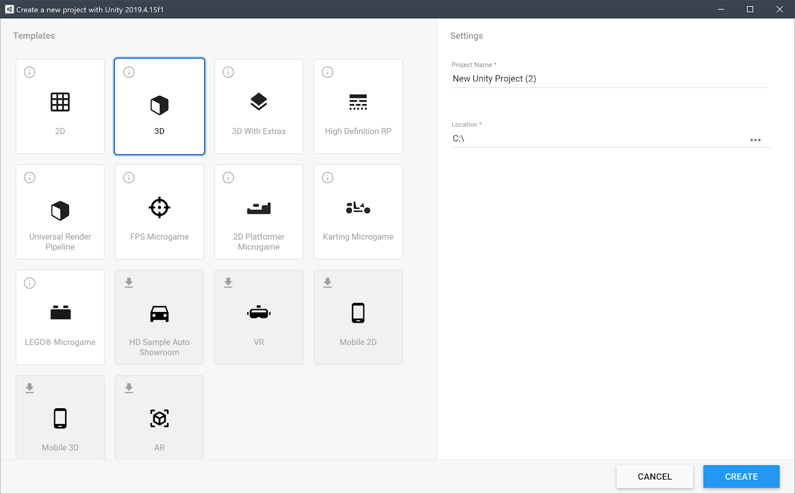
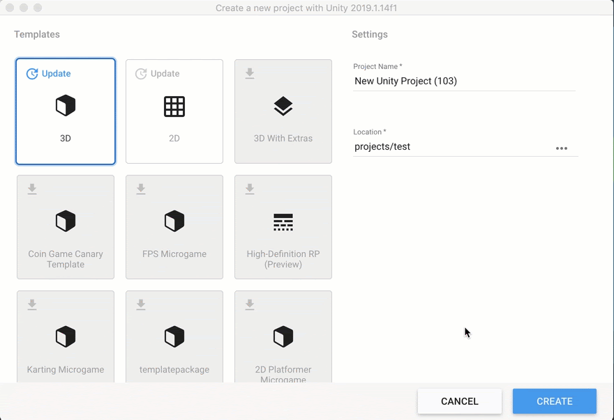

Templates
When you create a Project, you select a Template with which to initialize your Project.
Overview of Templates
All versions of Unity offer Core Templates. These are blank templates with preloaded packages and settings that enable you to quickly create a Project. (For example: 2D, 3D, 3D with Extras.) For information about the current Core Templates, see [Core Templates].
LTS versions of Unity also offer:
Sample Templates: Content-based templates designed to demonstrate Editor capabilities for a specific outcome. (For example: HDRP, Auto Showroom.)
Learning Templates: Project-led templates designed to teach you to use Unity features or builds and to publish a Project for a specific outcome. (For example: FPS Microgame, 2D Platformer Microgame, Karting Microgame, LEGO® Microgame.)
 LTS Project Templates
Because Templates are not shared between Editor versions, you need to download them separately for each version of the Editor you install. You must be connected to the Internet to see or download the latest Templates.
Core Templates
2D
Configures Project settings for 2D apps that use Unity’s built-in rendering pipeline.
3D
Configures Project settings for 3D apps that use Unity’s built-in rendering pipeline.
3D with Extras
Configures Project settings for 3D apps that use Unity’s built-in renderer and post-processing features. This Project type uses the new post-processing stack and includes several Presets to jump-start development along with example content.
Sample templates
High Definition RP
Available as a sample template from Editor version 2020.2.X onward, this template uses the High Definition Render Pipeline (HDRP) for graphics-intensive projects on platforms that support Shader Model 5.0 (DX11 and above).
This project includes:
Shader Graph: a tool that allows you to create shaders using a visual node editor instead of writing code. For more information on Shader Graph, see the Shader Graph documentation.
Visual Effect Graph
Presets
Example content
Universal Render Pipeline
The Universal Render Pipeline Template configures Project settings for Projects where performance, wide platform support, and ease of customizing graphics are the primary considerations. This Template uses the following Unity features:
- Universal Render Pipeline (URP): a prebuilt Scriptable Render Pipeline that is quick and easy to customize, and lets you create optimized graphics across a wide range of platforms. URP also includes an optimized 2D renderer complete with 2D lights and pixel perfect rendering, and an integrated post-processing solution. For more information on URP, see the URP documentation.
- Shader Graph: a tool that allows you to create shaders using a visual node editor instead of writing code. For more information on Shader Graph, see the Shader Graph documentation. The template contains the following:
- A sample Scene that contains examples of how to configure lighting settings, Materials, Shaders, and post-processing effects in URP
- Several preconfigured Universal Render Pipline Assets that let you quickly swap between graphics quality levels
- Presets that have been optimized for use with URP
Learning Templates
2D Platformer Microgame
Karting Microgame
LEGO® Microgame
Downloading Dynamic Templates
In the Unity Hub, when you click New, the Templates window displays a list of all the Project Templates available for that version of the Editor.
If a Dynamic Template is available for download, its tile displays a download icon.
To download a Template, move your cursor over its tile and click Download. When prompted, click Install.
Updating Dynamic Templates
If an update is available for a Template you previously installed, its tile displays the option Update. You can either download the update or continue using the installed version of the Template.

Downloading and updating Dynamic Templates